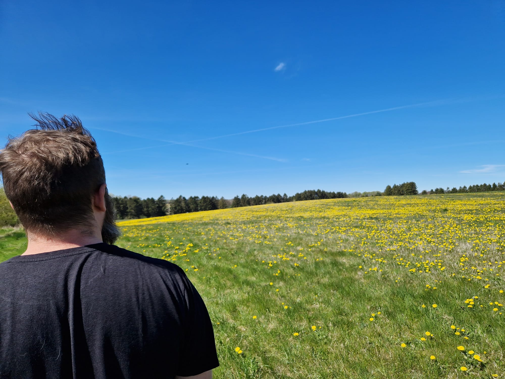

Andries Johannes Venter Krüger

First capstone project of the Full-Stack Web Development Bootcamp - My Resume
Education
- University of Pretoria - BSc Computer Science (2018-2021)
- University of Pretoria - BSc Honours Computer Science (2022)
Work Experience
- Software Developer at XYZ Company (2021-2022)
- Intern at ABC Corporation (2020-2021)
Skills
- Programming Languages: JavaScript, Python, Java
- Web Development: HTML, CSS, React
- Database Management: MySQL, MongoDB
Projects
- Personal Portfolio Website - A responsive website showcasing my projects and skills.
- Task Management App - A web application for managing tasks and to-do lists.
Home |About Me |Contact |